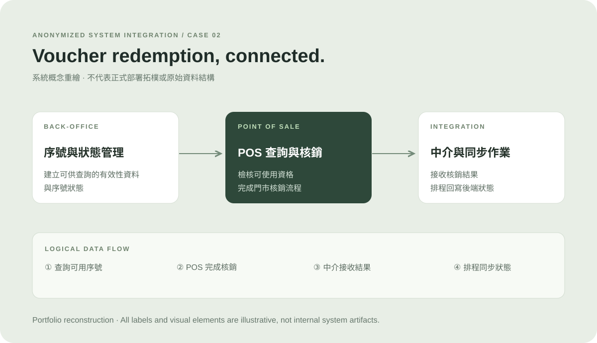

問題與限制
POS 門市可以先完成銷售；但後端批號管理商品庫存不足時，ERP 不允許直接扣庫，讓交易與帳務拋轉發生衝突。
門市能完成銷售，但後端庫存不足時，ERP 不允許直接過帳。我的工作，是把業務現實、既有系統規則與工程可行性協調成可交付的處理流程，並參與從後續規格到正式上線的執行。
POS 門市可以先完成銷售；但後端批號管理商品庫存不足時，ERP 不允許直接扣庫，讓交易與帳務拋轉發生衝突。
在前期訪談與藍圖完成後接手 POS 後續規格，負責跨單位協調、業務 UAT、教育訓練、上線前部署準備及上線支援。
與業者及工程師確認「先庫存檢核；不足則自動建立補足差額的存貨收貨，再完成發貨」，同時保留紀錄與人工盤點責任。
系統於 2026 年 1 月正式上線，已投入各門市使用；負庫存處理另有需求規格、開發測試及操作手冊支持。
角色與成果均依實際分工描述；不聲稱獨立開發整套系統或具備未量測的節省成本／改善率。
POS 端：零售門市以完成交易為主，不在銷售當下阻擋所有庫存不足情況。
ERP 端：此專案使用批號管理的商品，必須遵守既有庫存限制，不能因銷售端的交易而直接允許負庫存。
專案風險：若直接扣庫，可能使後端存貨單據無法建立，連帶影響每日帳務整合；若強制改變既有庫存規則，又會產生管理風險。
不能因門市 POS 能繼續銷售，就直接放寬後端啟用批號管理商品的庫存限制。
庫存不足時先補足帳面差額，再依交易數量建立發貨；資料處理狀態與錯誤留有追查機制。
補單只是介接處理，非實體進貨。帳實差異仍需由業者透過異常查詢、盤點及帳務調整處理。
以上為依規格書、測試文件與當事人工作描述整理的處理邏輯；並非宣稱本人單獨決定所有技術實作，亦非完整會議決策逐字紀錄。
依每日門市交易進行彙整，拋轉前先檢核對應倉庫的庫存量；不足時建立補足差額的收貨文件，再依原交易數量執行發貨。帳面補單後的差異留待人員後續檢查與調整。
與業者、財務及工程團隊討論，將銷售與庫存管理的不同責任轉換為清楚的系統處理條件。
自動補單可能使帳面庫存與實際庫存出現差異，因此需要紀錄、查詢及業務人員後續盤點與帳務調整。
上述為依專案資料重新整理的匿名化業務流程示意，並非原系統技術架構或客戶畫面。
初期需求訪談及企業藍圖由原團隊完成；我接手後負責 POS 後續功能規格撰寫、修改與維護。
與業者、財務及工程師確認介接、庫存與帳務處理方式；個別 SQL View／SP／Trigger 由我實作，其他程式依團隊分工。
由我親自執行 POS 業務 UAT，檢查會員、折扣、付款、退貨、日結及例外操作情境。
由我執行上線前教育訓練，編寫操作手冊第一版；後續請實習生協助完善，並參與部署準備。
參與 2026 年 1 月正式上線，負責上線期間及後續的使用者問題支援與跨單位協調。
負庫存處理需求、存貨檢核、收發貨處理及異常紀錄均有對應規格與版本。
測試紀錄涵蓋庫存不足時的補單及發貨、日記帳、處理狀態及錯誤紀錄。
UAT 腳本包含正向操作與例外情境；不以空白簽核欄宣稱所有案例都已通過。
製作手冊第一版並辦理正式上線前教育訓練，配合門市導入與上線後支援。
這是專案團隊共同交付成果。個人職責聚焦於接手後的規格、協調、業務驗收、訓練、部署準備及上線支援；不宣稱獨立完成整套系統或未經測量的效率改善。
整合範圍亦涉及門市交易、商品主檔、會員及財務資料等情境。部分工作包含 API／JSON 規格、資料欄位對應、Postman 驗證及 SQL 資料處理。
例如禮券核銷可透過後端資格查詢、POS 核銷及資料回寫完成狀態同步。這是專案內另一個整合情境，但非本頁的主要挑戰案例。

Confidentiality: 不公開客戶名稱、原始規格書、SQL 原始碼、實際操作帳密、內部表名與交易資料。此頁圖示重新繪製，保留可討論的業務邏輯。